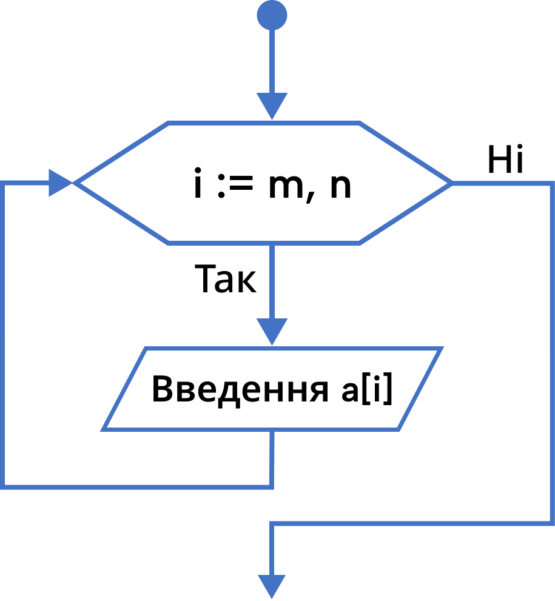

Масиви
Розділ опису типів.
Якщо в програмі вводяться деякі типи даних, які відмінні від стандартних, вони повинні бути описані в розділі опису типів. Розділ типів починається з ключового слова type і має наступний формат:
- type
- ім’я_типу_1 := опис_типу_1;
- …
- ім’я_типу_n := опис_типу_n;
Таким же чином можуть і перевизначатися стандартні типи даних для того, щоб поліпшити наочність програми. У цьому випадку ім'я типу даних буде асоціюватися з областю значень відповідних змінних.
- Наприклад:
- type
- Wysota = real;
- Nomera = integer;
- Litery = char;
- var
- h1, h2, h3: Wysota;
- num_1, num_2: Nomera;
- index, grif: Litery;
- type
Одновимірні масиви.
Масив даних – це лінійно впорядкована сукупність елементів одного і того ж типу. Для масиву характерно наступне:
- кожен компонент масиву може бути явно позначений і до нього є прямий доступ;
- число компонентів масиву визначається при його описі і надалі не змінюється.
Масив є аналогом такого математичного поняття як вектор. Кожен елемент масиву є аналог проекції вектору на відповідну вісь координат. Отже, масив, що містить n елементів є аналог вектора в n-вимірному просторі.
Для позначення компонентів масиву використовується ім’я, яке ставиться у відповідності даного масиву (ім'я змінної масиву) та індекси, які однозначно вказують необхідний елемент. Індекси можуть бути тільки рахованого типу (integer, char), який є безліччю цілого або символьного типів. Зазвичай в якості індексів при описі масиву використовують відрізок ряду цілих чисел: m ... n, де m < n.
Об’явити масив можна одним з таких способів:
- type
- Ar : array[m .. n] of тип_елементів_масиву;
- var
- a : Ar;
- var
- a : array[m .. n] of тип_елементів_масиву;
Скалярна величина вказівка ідентифікатора деякої змінної дозволяє однозначно звернеться до її значення. При роботі з масивами цього недостатньо. Тут крім вказівки ідентифікатора змінної-масиву необхідно ще й вказувати його індекс, що показує місце розташування необхідного значення в масиві a[i].
Якщо при обробці деякої скалярної величини використовувався лінійний алгоритм, то при обробці масиву за тими ж правилами необхідно використовувати циклічний алгоритм. Пов'язано це з тим, що масив довжиною n значень відповідного типу, містить n значень відповідного типу, що еквівалентно наявності n змінних. Якби ми створили програму для роботи з скалярними величинами і нам необхідно було б обробити їх n різних значень (причому зберігати їх в пам'яті комп'ютера одночасно), то довелося б створювати довгу і неефективну програму, що обробляє кожен елемент по черзі.
При роботі з масивами алгоритм записується для обробки лише однієї величини – елемента масиву, а потім охоплюється циклом, який перебирає по черзі всі наступні елементи масиву.

Приклад: Скласти програму знаходження суми елементів деякої послідовності.
- program SumMass;
- Const
- n = 5;
- Var
- mas: array[1 .. n] of integer;
- i: integer;
- Sum: integer;
- begin
- for i := 1 to n do
- ReadLn(mas[i]);
- Sum := 0;
- for i := 1 to n do
- Sum:= Sum + mas[i];
- for i := 1 to n do
- WriteLn('Sum = ', Sum);
- end.